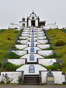
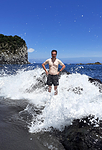
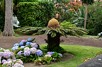
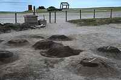
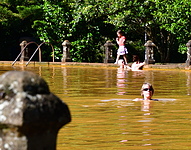

Azoren 2022
Die Azoren bestehen aus 9 Inseln die mitten im Atlantik liegen. Wir waren 2 Wochen auf São Miguel und hatten eine Ferienwohnung in der kleinen Stadt Ribeira Grande, die an der Nordküste liegt.




